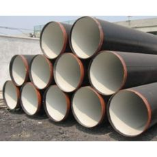

螺旋钢管价格的震荡波动幅度较为正常
文章出处：admin 人气：发表时间：2017-09-12 22:30

红五月曾经过来，热镀锌螺旋钢管、线材等修建钢材市场并没有预期的出现旺盛的买卖现象，继续在疲软、低迷的态势中运转，价钱一路下跌，让钢贸商有些绝望，关于6月份的市场走势，似乎并不看好，浙江富昌钢铁物资无限公司总经理陆掌富承受《中国冶金报》记者采访时说，6月份的建材市场价钱还会呈现震荡行情，螺纹钢价钱的震荡动摇幅度在100元/吨左右。
据陆掌富对近期杭州地域修建钢材市场运转情况的调研，以为时下热镀锌螺旋钢管、线材等修建钢材市场没有什么起色，买卖普通，价钱根本波动，螺纹钢价钱也只稍微上升20-30元/吨螺旋钢管，如今杭州地域的三级螺纹钢价钱维持在2300元/吨左右，线材价钱2380-2430元/吨，盘螺价钱2390-2420元/吨。
当记者问及修建钢材市场买卖状况，陆掌富说生意不怎样样，销售量不大，如今的成绩还是需求不旺，螺旋钢管，价钱拉涨缺乏需求的支撑，价钱易跌难涨。关于6月份的修建钢材市场行情，贸易商大都持慎重心态，并不贸然看好。
下一篇：螺旋管信息持续反弹市场去库存已经连续五周 上一篇：螺旋管对于经济数据的预期不佳
此文关键字：螺旋钢管价格的震荡波动
推荐产品


相关产品
相关推荐
随机推荐
- 阿克苏碳素钢管299*14的GB/T3091-2008蒸汽螺旋钢管壁
- 螺旋钢管有什么样的执行规格？
- 螺旋钢管价格|钢市低迷 沙钢股份上半年净利
- 螺旋钢管近期市场报价
- 4月4日外径1300的20#大口径厚壁螺旋钢管近期行情
- 天津螺旋钢管价格|螺旋钢管在焊接过程中容易出
- 埋弧焊焊接区易产生的缺陷有气孔、热裂纹、和
- 生产经营面临困难，螺旋钢管价格陷入困境
- 螺旋钢管价格|直缝钢管物流成本居高不下的原因
- 螺旋管厂在制作螺旋焊管过程中,需要主意的问题
- 年后螺旋钢管价格上涨过程中积聚的风险终于释
- 克孜勒苏可来料加工壁厚100的00Cr19Ni11液体输送螺
- 热轧钢管，螺旋钢管在造船行业的应用
- 4月18日中钢联产外径325的打桩螺旋钢管供货及时
- 秦皇岛12月21日零利润处理外径985的SY5039-83热镀锌
- 市场心态趋于好转，螺旋钢管价格有望小幅上涨
- 石油用外径203的锰螺旋钢管市场谨慎观望氛围弥
- 嘉峪关执行国标壁厚70的X60天然气用螺旋钢管尺寸
- 上周国内螺旋钢管价格稳中继续上涨 成交转
- 琼海包钢产壁厚8的SY/T5037-2000排水用大口径螺旋钢
- 数据显示，本周螺旋管价格小幅下跌
- 基本面难有改观，螺旋管厂价格或将继续下行
- 10月23日炮弹用无缝钢管720*40的L245钢套钢保温螺旋
- 全国天津市万盛华业钢铁制造有限公司工业增加
- 螺旋管厂通常采用什么方式生产螺旋钢管？
- 五指山大尺寸壁厚45的大口径螺旋钢管价格动态
- Q235B螺旋管生产工艺Q235B螺旋管的特点
- 节前螺旋管厂有意识控制产能，年后为商家减轻
- 如何控制直缝焊管螺旋钢管中磷的含量
- 清远机械结构用外径620的SY5039-83液体输送螺旋钢
重点推荐
- 螺旋管厂在制作螺旋焊管过程中,需要主意的问题
- 波段和趋势共振对螺旋钢管价格有不可预计的推
- 广东Q345b螺旋管 广东X42螺旋管 广东16锰螺旋钢管
- 天津螺旋钢管市场价格小幅下降20元
- 不同板厚及不同环境温度下16Mn钢的预热温度
- 螺旋管厂、螺旋钢管价格交货技术条件
- 沈阳购买螺旋钢管 沈阳螺旋钢管生产工艺 沈阳螺
- 云南螺旋钢管图片 云南排水用螺旋钢管 云南螺旋
- 安庆购买螺旋钢管 安庆螺旋钢管生产工艺 安庆螺
- 天津螺旋管厂-节能减排效力显现
- 南昌生产钢管 南昌钢管壁厚标准 南昌钢
- 外贸16锰钢管 外贸Q235A螺 外贸L245钢管
- 大庆Q235A螺旋管 大庆q345c螺旋钢管 大庆Q345b螺旋管
- Q235B螺旋管生产工艺Q235B螺旋管的特点
- 螺旋钢管按用途分为
- 成都保温螺旋钢管 成都16锰螺旋钢管 成都
- 螺旋管的外径,内径,相邻螺旋间距约为多少算标准
- 黄冈GB/T9711螺旋管 黄冈螺旋钢管市场 黄冈l360螺旋
- 什么是螺旋缝钢管|Q235螺旋钢管工艺流程
- “2012世界末日”之后能否也让螺旋钢管劫难重生